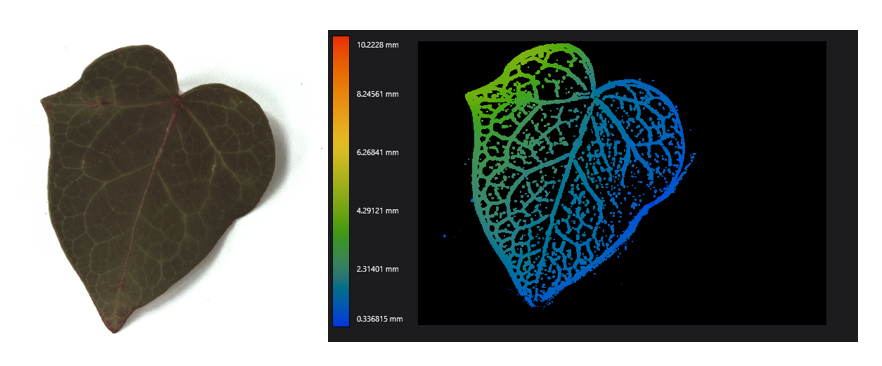
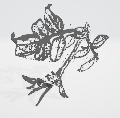

Exportación de archivos
A continuación, se explica un poco sobre todos los archivos que se pueden exportar

Archivos de campo de luz
| Archivo | Descripción |
|---|---|
| Ray File | Imagen Ray que incluye todos los datos en el formato de imagen de ray de raytrix. Esto permite reenfocar m´as tarde y estimar la profundidad con RxLive o el SDK. |
| Secuencia | Imágenes en secuencia en formato Ray |
Archivos tipo imágenes
| Archivo | Descripción |
|---|---|
| Raw image | Imagen sin procesar que contiene las imágenes de microlentes sin procesar |
| Processed Image | Imagen Raw procesada. Dependiendo de su configuración, se aplican filtros de mejora de imagen y la imagen gris. |
| Multiview Image | Imagen estéreo |
| Calibration Grid | Imagen Raw y cuadrícula MLA virtual trazada en ella |
| Gray Image | Imagen de grises utilizada para eliminar el viñeteado en el paso de preprocesamiento |
| Total Focus | Imagen a la cual se le aplica una estimación de profundidad y el enfoque se establece por píxel. |
| Total Focus (Orthographic) | Esta imagen combina el conocimiento de la cáamara de campo de luz calibrada y la estimación de profundidad sin procesar, cada píxel se puede proyectar desde la imagen procesada a un espacio métrico en 3D. Con esta información se puede determinar el color correcto para cada píxel. Se puede sintetizar una vista de cáamara virtual a partir de esta escena para producir una vista como si la escena fuera capturada por una lente telecéntrica |
| Colored Depth Map | Mapa de profundidad codificado con colores falsos |
| Colored Depth Map (Orthographic) | El mapa de profundidad de color muestra un mapa de profundidad de color falso. Las variaciones de profundidad se representan mediante un degradado de color. |
| Basic Refocus | Una imagen donde un plano específico está enfocado. |

Archivos de profundidad
| Archivo | Descripción |
|---|---|
| 3D Depth Image | Archivo .tiff donde para cada píxel puede encontrar x (mm) en el canal rojo, y (mm) en el canal verde y z (mm) en el canal azul |
| 3D Reference Depth Image | Posición X,Y,Z en el espacio de referencia por píxel |
| Colored Raw Depth Map | Los sofisticados algoritmos de Raytrix proporcionan una estimación de profundidad inicial rápida y sólida utilizando el conocimiento de nuestro modelo de cámara de campo de luz. La estimación de profundidad sin procesar permite todos los pasos de procesamiento posteriores. |
| Depth Map: | .tiff, donde para cada píxel puede encontrar z (mm) como valor de 16 bits. |
| Depth Map (Orthographic) | El mapa de profundidad de color muestra un mapa de profundidad de color falso. Las variaciones de profundidad se representan mediante un degradado de color. |
| Raw Depth Map | Estimación de profundidad sin procesar tras estimación sin fusible. |
Archivos de datos
| Archivo | Descripción |
|---|---|
| 3D Mesh (PLY) | Crea una malla a partir de un mapa 3D que contiene informaci´on de color de su imagen Total Focus. Contiene una textura. |
| 3D Mesh (STL) | Construye una malla a partir de un mapa 3D. No contiene textura. |
| 3D Points (PCD) | Exporta los valores de profundidad estimados en un archivo .PCD (datos de nube de puntos). Estos archivos se pueden ver con herramientas externas (por ejemplo, Meshlab). Contiene una textura. |
| 3D Points (XYZ) | Exporta los valores de profundidad estimados en un archivo de texto. Estos archivos se pueden ver con herramientas externas (por ejemplo, Meshlab) |
| Calibration File | Archivo XML que contiene la calibración de la cámara. |